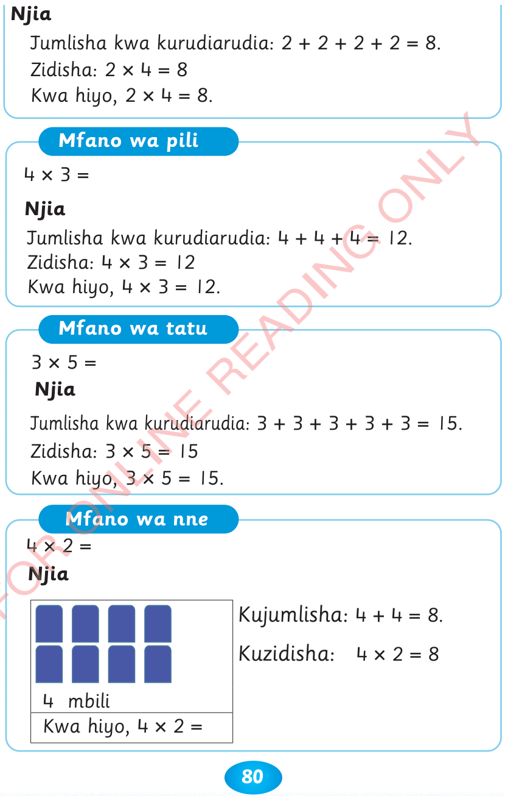

Njia
Jumlisha kwa kurudiarudia: 2 + 2 + 2 + 2 = 8.
Zidisha: 2 × 4 = 8
Kwa hiyo, 2 × 4 = 8.
Mfano wa pili
Njia
Jumlisha kwa kurudiarudia: 4 + 4 + 4 = 12.
Zidisha: 4 × 3 = 12
Kwa hiyo, 4 × 3 = 12.
Mfano wa tatu
Njia
Jumlisha kwa kurudiarudia: 3 + 3 + 3 + 3 + 3 = 15.
Zidisha: 3 × 5 = 15
Kwa hiyo, 3 × 5 = 15.
Mfano wa nne
Njia

4 mbili
Kwa hiyo, 4 × 2 =
Kujumlisha: 4 + 4 = 8.
Kuzidisha: 4 × 2 = 8